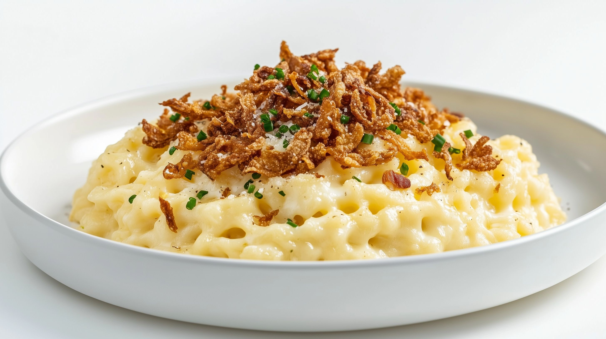

Odin-Recipes
Käsespätzle Rezept

Foto von Marco Verch, via ccnull.de, lizenziert unter CC BY 2.0
Ein einfaches und leckers Käsespätzle Rezept.
Zutaten:
- 300 Eierspätzle
- 150 g Gouda oder Emmentaler, gerieben
- 1 Zwiebel
- 2 EL Sonnenblumenöl/li>
Schritte:
- Die Eierspätzle in gesalzenem Wasser kochen
- Zwiebeln schneiden
- Käse reiben
- Zwiebeln im Sonnenblumenöl glasig werden lassen
- Zwiebeln mit der Hälfte des geriebenen Käses in eine Schüssel geben
- Umrühren und in eine Auflaufform geben
- den restlichen Käse oben drauf streuen
- 20min bie 180° überbacken und fertig!